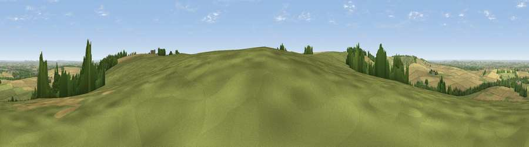

Viewpoint near Letcombe Bassett
#12471 in England · top 13% of its area beats it · near Letcombe BassettThe view, rendered

A 360° render of this exact spot computed from the terrain model, tree cover and land cover — summer colours, afternoon light, calibrated against photographs of famous viewpoints. Real trees, hedges and buildings will differ in detail.
The panorama
Grey silhouette: terrain skyline in each direction (720 bearings, Earth curvature and refraction included). Dashed green: skyline with trees (+15 m) and buildings (+8 m) as obstacles. Blue strip: how far the ground is visible on each bearing.
Where the view opens
Wedge length = distance to the farthest visible ground on that bearing (vegetation-aware). Rings at 10, 25 and 50 km.
What fills the view
52% cropland · 36% grassland · 9% woodland · 2% built-up
Angular shares of the visible panorama (visual magnitude), not map area. Landscape diversity 0.44 (0–1 Shannon).
Key numbers
More beautiful places nearby
The staircase of upgrades: each row has a higher view potential than everything closer. Driving times are estimates from straight-line distance, calibrated against real road routing — check an actual route before setting out.
| Place | Direction | Drive | Score |
|---|---|---|---|
| Smith's Hill | SW · 1 km | ~3 min | 61.2 |
| Viewpoint near Letcombe Regis | ENE · 1 km | ~3 min | 62.0 |
| Seven Acre Hill | WNW · 4 km | ~10 min | 66.6 |
| Viewpoint near Kingston Lisle | WNW · 7 km | ~15 min | 68.5 |
| Viewpoint near Woolstone | WNW · 8 km | ~16 min | 70.9 |
| Viewpoint near Woolstone | WNW · 9 km | ~17 min | 76.7 |
| Martinsell viewpoint | SW · 29 km | ~46 min | 77.3 |
| Viewpoint near Leckhampton | NW · 55 km | ~77 min | 77.8 |
51.56011, -1.44783 · source: screening · position refined by local search. Computed location — check access rights before visiting.